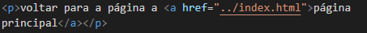

voltar para a página a página principal
Para voltar de uma página que está dentro de uma pasta, usa-se o "../ (link)" na referencia do link, para que o link funcione corretamente, lembrando que "../", é um comando linux. Segue o exemplo:
